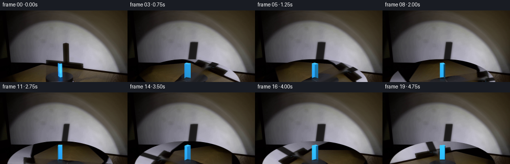
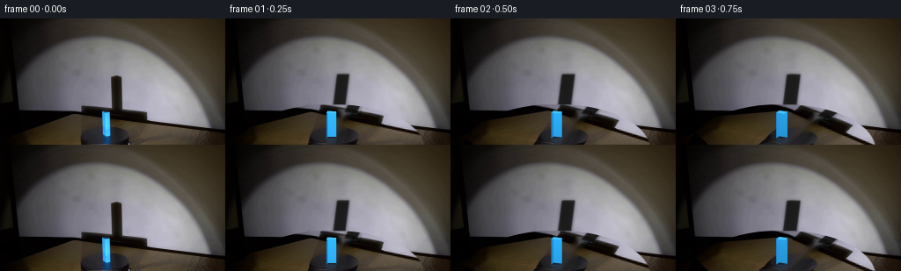
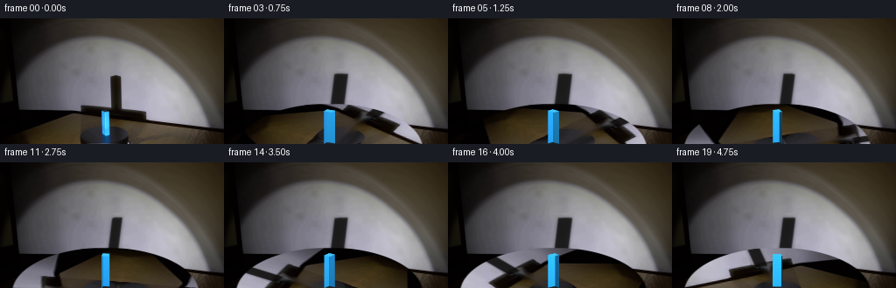
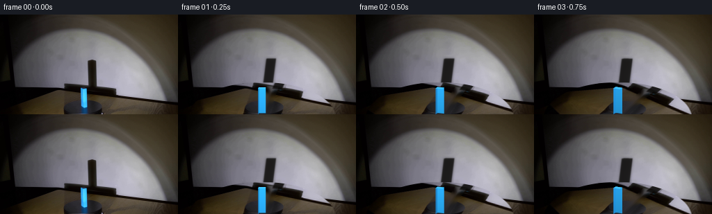

CODING AGENTS AS PIXEL WORLD MODELS
traex/GPT-5.6-Sol · 0075
点击播放 · 原生 RGB 像素
逐轮保存的候选
回放视频、检查图与代码变化。
每份候选均可单独播放。实际图片检查记录在下方工具轨迹中。
候选 01播放与检查图
点击播放 · 原生 RGB 像素


展开代码变化
--- 上一保存版本
+++ 本次保存版本
@@ -0,0 +1,189 @@
+from pathlib import Path
+import cv2
+import numpy as np
+from PIL import Image, ImageDraw, ImageFilter
+import artifact_io
+
+W, H = 256, 144
+S = 4
+ROOT = Path(__file__).resolve().parent
+
+
+def horizontal_repair(img, x0, x1, y0, y1):
+ """Remove a narrow vertical object from a smoothly lit surface."""
+ out = img.copy().astype(np.float32)
+ for y in range(max(0, y0), min(H, y1)):
+ left = out[y, x0 - 2:x0 + 1].mean(axis=0)
+ right = out[y, x1:x1 + 3].mean(axis=0)
+ for x in range(x0, x1):
+ q = (x - x0 + 1) / (x1 - x0 + 1)
+ # Smooth interpolation retains the broad spotlight gradient.
+ q = q*q*(3 - 2*q)
+ out[y, x] = left*(1-q) + right*q
+ return np.clip(out, 0, 255).astype(np.uint8)
+
+
+def alpha_over(dst, color, alpha):
+ a = alpha[..., None].astype(np.float32)
+ return np.clip(dst.astype(np.float32)*(1-a) + np.asarray(color, np.float32)*a, 0, 255).astype(np.uint8)
+
+
+def poly_mask(points, blur=0.0):
+ layer = Image.new('L', (W*S, H*S), 0)
+ d = ImageDraw.Draw(layer)
+ d.polygon([(int(round(x*S)), int(round(y*S))) for x, y in points], fill=255)
+ if blur:
+ layer = layer.filter(ImageFilter.GaussianBlur(blur*S))
+ # BOX gives exact area antialiasing at polygon boundaries.
+ return np.asarray(layer.resize((W, H), Image.Resampling.BOX), dtype=np.float32)/255.0
+
+
+def hull_mask(points, blur=0.0):
+ hull = cv2.convexHull(np.asarray(points, np.float32)).reshape(-1, 2)
+ return poly_mask(hull, blur)
+
+
+def projected_prism(theta):
+ """Return rotated cuboid geometry under an orthographic laboratory camera."""
+ bw, bd, height = 10.0, 7.6, 29.2
+ cx, base = 120.5, 136.0
+ # Counter-clockwise algebra is clockwise in screen/top-view coordinates.
+ c, s = np.cos(theta), np.sin(theta)
+ local = np.array([[-bw/2, -bd/2], [bw/2, -bd/2],
+ [bw/2, bd/2], [-bw/2, bd/2]], np.float32)
+ world = np.c_[local[:, 0]*c-local[:, 1]*s,
+ local[:, 0]*s+local[:, 1]*c]
+ def project(z):
+ return np.c_[cx + world[:, 0], base + .30*world[:, 1] - z]
+ return world, project(0), project(height), height
+
+
+def rotating_platform(source, angle):
+ """Rotate the photographed texture on the foreshortened black turntable."""
+ yy, xx = np.mgrid[0:H, 0:W].astype(np.float32)
+ cx, cy, rx, ry = 120.0, 149.0, 107.0, 52.0
+ u, v = (xx-cx)/rx, (yy-cy)/ry
+ c, s = np.cos(angle), np.sin(angle)
+ # inverse map for clockwise forward motion
+ u0, v0 = c*u + s*v, -s*u + c*v
+ mx, my = cx + rx*u0, cy + ry*v0
+ turned = cv2.remap(source, mx.astype(np.float32), my.astype(np.float32),
+ cv2.INTER_CUBIC, borderMode=cv2.BORDER_REFLECT_101)
+ rr = np.sqrt(u*u+v*v)
+ mask = np.clip((1.005-rr)/.018, 0, 1)
+ # The front of the disc continues below the frame; constrain its upper rim.
+ mask *= np.clip((yy-96.5)/2.0, 0, 1)
+ return np.clip(source*(1-mask[..., None]) + turned*mask[..., None], 0, 255).astype(np.uint8)
+
+
+def draw_shadow(frame, bottom, top, height):
+ # Project all eight prism vertices onto the rear wall. The source is low-left,
+ # hence the pronounced upward/right displacement and enlarged silhouette.
+ pts = []
+ cx = 120.5
+ for ring, z in ((bottom, 0.0), (top, height)):
+ zz = z/height
+ for p in ring:
+ x = 128.7 + 1.24*(p[0]-cx) + 5.2*zz
+ y = 105.8 - 42.0*zz + .34*(p[1] - (136.0-z))
+ pts.append((x, y))
+ # Wide penumbra plus dense umbra reproduces a real finite spotlight.
+ pen = hull_mask(pts, blur=2.0) * .43
+ frame = alpha_over(frame, (12, 9, 6), pen)
+ core = hull_mask(pts, blur=.55) * .76
+ frame = alpha_over(frame, (8, 7, 5), core)
+ return frame
+
+
+def face_color(normal, face_index):
+ # Fixed spotlight: Lambertian response changes as the blue sample turns.
+ light = np.array([-0.34, -0.94], np.float32)
+ lambert = max(0.0, float(np.dot(normal, light)))
+ gain = .34 + .72*lambert
+ base = np.array([45., 177., 250.])
+ col = base*gain + np.array([1., 5., 10.])
+ # Tiny material differences keep adjoining faces legible.
+ col *= [0.98, 1.0, 1.0] if face_index % 2 == 0 else [0.88, .93, .98]
+ return np.clip(col, 0, 255)
+
+
+def draw_prism(frame, theta, bottom, top, world):
+ c, s = np.cos(theta), np.sin(theta)
+ # Original outward normals for the four sides in corner order.
+ normals0 = np.array([[0, -1], [1, 0], [0, 1], [-1, 0]], np.float32)
+ normals = np.c_[normals0[:, 0]*c-normals0[:, 1]*s,
+ normals0[:, 0]*s+normals0[:, 1]*c]
+ visible = [i for i in range(4) if normals[i, 1] < 0.001]
+ # Farther face first; antialiased masks meet cleanly at vertical edges.
+ visible.sort(key=lambda i: np.mean([world[i,1], world[(i+1)%4,1]]), reverse=True)
+ for i in visible:
+ j = (i+1) % 4
+ poly = [bottom[i], bottom[j], top[j], top[i]]
+ mask = poly_mask(poly)
+ color = face_color(normals[i], i)
+ # Subtle vertical brightness rolloff characteristic of the spotlight.
+ yy = np.arange(H, dtype=np.float32)[:,None]
+ grad = np.clip(1.07 - .0032*(yy-106), .90, 1.08)
+ colored = np.clip(color[None,None,:]*grad[...,None], 0, 255)
+ a = mask[...,None]
+ frame = np.clip(frame.astype(np.float32)*(1-a)+colored*a,0,255).astype(np.uint8)
+
+ # Top plane, cool bright paint with a small specular concentration.
+ topmask = poly_mask(top)
+ topcol = np.array([67, 198, 252], np.float32)
+ frame = alpha_over(frame, topcol, topmask)
+ # Fine dark contact line grounds the block on the platform.
+ contact = poly_mask([bottom[0], bottom[1], bottom[2], bottom[3]], blur=.25)*.20
+ frame = alpha_over(frame, (2, 3, 5), contact)
+ return frame
+
+
+def draw_reflection(frame, theta, bottom, top, world):
+ # A weak, vertically compressed mirror image in the polished black platform.
+ base = 136.0
+ reflected = []
+ for p in top:
+ reflected.append((p[0], base + (base-p[1])*.25))
+ mask = hull_mask(list(bottom)+reflected, blur=.75)
+ yy = np.arange(H)[:,None]
+ fade = np.clip((144-yy)/8.0, 0, 1)
+ mask *= fade*.20
+ # Keep reflection below the contact plane only.
+ mask[:136] = 0
+ return alpha_over(frame, (30, 126, 196), mask)
+
+
+def build_frames():
+ original = np.asarray(Image.open(ROOT/'first_frame.png').convert('RGB'), dtype=np.uint8)
+ # Remove the photographed initial shadow from the wall first.
+ clean = horizontal_repair(original, 124, 139, 58, 108)
+ # Remove block and reflection using content-aware reconstruction of the dark disc.
+ objmask = np.zeros((H,W), np.uint8)
+ cv2.rectangle(objmask, (113,103), (129,143), 255, -1)
+ clean = cv2.inpaint(clean, objmask, 5, cv2.INPAINT_TELEA)
+ # Suppress any blue fringe left by antialiasing before turntable remapping.
+ hsv = cv2.cvtColor(clean, cv2.COLOR_RGB2HSV)
+ fringe = (((hsv[...,0] > 88) & (hsv[...,0] < 116) & (hsv[...,1] > 75)) &
+ (np.indices((H,W))[1] >= 110) & (np.indices((H,W))[1] <= 132) &
+ (np.indices((H,W))[0] >= 101)).astype(np.uint8)*255
+ if fringe.any():
+ clean = cv2.inpaint(clean, fringe, 3, cv2.INPAINT_TELEA)
+
+ frames = [original.copy()]
+ # 36 degrees per second: clearly readable, steady real-time scientific motion.
+ for n in range(1, 20):
+ theta = np.deg2rad(9.0*n)
+ world, bottom, top, height = projected_prism(theta)
+ frame = clean.copy()
+ frame = draw_shadow(frame, bottom, top, height)
+ # Wall shadow is occluded naturally by the rotating foreground platform.
+ frame = rotating_platform(frame, theta)
+ frame = draw_reflection(frame, theta, bottom, top, world)
+ frame = draw_prism(frame, theta, bottom, top, world)
+ frames.append(frame)
+ return np.stack(frames).astype(np.uint8)
+
+
+if __name__ == '__main__':
+ frames = build_frames()
+ artifact_io.save(frames, ROOT)
候选 02播放与检查图
点击播放 · 原生 RGB 像素


展开代码变化
--- 上一保存版本
+++ 本次保存版本
@@ -45,8 +45,8 @@
def projected_prism(theta):
"""Return rotated cuboid geometry under an orthographic laboratory camera."""
- bw, bd, height = 10.0, 7.6, 29.2
- cx, base = 120.5, 136.0
+ bw, bd, height = 10.0, 7.6, 37.5
+ cx, base = 120.5, 143.5
# Counter-clockwise algebra is clockwise in screen/top-view coordinates.
c, s = np.cos(theta), np.sin(theta)
local = np.array([[-bw/2, -bd/2], [bw/2, -bd/2],
@@ -85,7 +85,7 @@
zz = z/height
for p in ring:
x = 128.7 + 1.24*(p[0]-cx) + 5.2*zz
- y = 105.8 - 42.0*zz + .34*(p[1] - (136.0-z))
+ y = 105.8 - 42.0*zz + .34*(p[1] - (143.5-z))
pts.append((x, y))
# Wide penumbra plus dense umbra reproduces a real finite spotlight.
pen = hull_mask(pts, blur=2.0) * .43
@@ -140,7 +140,7 @@
def draw_reflection(frame, theta, bottom, top, world):
# A weak, vertically compressed mirror image in the polished black platform.
- base = 136.0
+ base = 143.5
reflected = []
for p in top:
reflected.append((p[0], base + (base-p[1])*.25))
@@ -149,7 +149,7 @@
fade = np.clip((144-yy)/8.0, 0, 1)
mask *= fade*.20
# Keep reflection below the contact plane only.
- mask[:136] = 0
+ mask[:143] = 0
return alpha_over(frame, (30, 126, 196), mask)
可观测工具轨迹
实际执行的命令与返回图片。
命令 1exit 0
/bin/bash -lc "cat GENERATION_RULES.md && printf '\\n--- PROMPT ---\\n' && cat prompt.txt"
命令 2exit 127
/bin/bash -lc "find . -maxdepth 2 -type f -printf '%p\\n' | sort && file first_frame.png"
命令 3exit 0
/bin/bash -lc "python3 - <<'PY'
from PIL import Image
import numpy as np
im=np.array(Image.open('first_frame.png').convert('RGB'))
print(im.shape, im.dtype, im.min(), im.max())
# colors top frequency exact
from collections import Counter
c=Counter(map(tuple, im.reshape(-1,3)))
print('unique',len(c))
for k,v in c.most_common(20): print(k,v)
# regions stats
for name,sl in [('top',im[:48]),('mid',im[48:96]),('bottom',im[96:]),('left',im[:,:85]),('center',im[:,85:171]),('right',im[:,171:])]:
print(name, np.mean(sl,axis=(0,1)).round(1),np.percentile(sl.reshape(-1,3),[5,50,95],axis=0).round(0))
PY"命令 4exit 0
/bin/bash -lc "python3 - <<'PY'
from PIL import Image
import numpy as np
im=np.array(Image.open('first_frame.png').convert('RGB'))
# 4x4 blocks means
for y in range(0,144,4):
s=''
for x in range(0,256,4):
r,g,b=im[y:y+4,x:x+4].mean((0,1)); lum=(r+g+b)/3
if b>r*1.35 and b>g*1.15 and b-r>20: c='B'
elif r>b*1.4 and r>g*1.15 and r-b>20: c='R'
elif r>b*1.25 and g>b*1.2 and r+g>100: c='Y'
elif lum<12:c='@'
elif lum<28:c='#'
elif lum<50:c='O'
elif lum<75:c='o'
elif lum<105:c='.'
elif lum<140:c='-'
elif lum<180:c='+'
elif lum<220:c='*'
else:c=' '
s+=c
print(f'{y:03d} {s}')
PY"命令 5exit 0
/bin/bash -lc "cat artifact_io.py && python3 - <<'PY'
import numpy as np
from PIL import Image
from sklearn.cluster import KMeans
im=np.array(Image.open('first_frame.png').convert('RGB'))
X=im.reshape(-1,3)
km=KMeans(12,random_state=1,n_init=5).fit(X[::3])
for i,c in enumerate(km.cluster_centers_):
inds=np.where(km.predict(X)==i)[0]; ys=inds//256; xs=inds%256
print(i, np.rint(c).astype(int),len(inds),'bbox',xs.min(),ys.min(),xs.max(),ys.max(),'meanxy',xs.mean().round(1),ys.mean().round(1))
PY"命令 6exit 1
/bin/bash -lc "python3 - <<'PY'
import cv2, numpy as np
from PIL import Image
im=cv2.imread('first_frame.png'); hsv=cv2.cvtColor(im,cv2.COLOR_BGR2HSV)
# component specs masks
masks={
'blue':(hsv[:,:,0]>85)&(hsv[:,:,0]<120)&(hsv[:,:,1]>80)&(hsv[:,:,2]>80),
'dark':hsv[:,:,2]<25,
'bright':hsv[:,:,2]>180,
'saturated':hsv[:,:,1]>80,
}
for n,m in masks.items():
nn, lab, stats, cent=cv2.connectedComponentsWithStats(m.astype('uint8'))
print('\\n',n,'pixels',m.sum())
for s,c in sorted(zip(stats[1:],cent[1:]),key=lambda x:-x[0,4])[:15]: print(s.tolist(),c.round(1).tolist())
# sample rows every 8, run colors categories
rgb=np.array(Image.open('first_frame.png').convert('RGB'))
# Print samples grid each 8x8 avg rgb tuples
for y in range(0,144,8):
print('\\ny',y,end=' ')
for x in range(0,256,8):
a=rgb[y:y+8,x:x+8].mean((0,1)).astype(int)
print('%02x%02x%02x'%tuple(a),end=' ')
print()
PY"命令 7exit 0
/bin/bash -lc "python3 - <<'PY'
import cv2, numpy as np
from PIL import Image
im=cv2.imread('first_frame.png'); hsv=cv2.cvtColor(im,cv2.COLOR_BGR2HSV)
masks={'blue':(hsv[:,:,0]>85)&(hsv[:,:,0]<120)&(hsv[:,:,1]>80)&(hsv[:,:,2]>80),'dark':hsv[:,:,2]<25,'bright':hsv[:,:,2]>180,'saturated':hsv[:,:,1]>80}
for n,m in masks.items():
nn, lab, stats, cent=cv2.connectedComponentsWithStats(m.astype('uint8'))
print('\\n',n,'pixels',m.sum())
ids=sorted(range(1,nn),key=lambda i:-stats[i,4])[:15]
for i in ids: print(stats[i].tolist(),cent[i].round(1).tolist())
rgb=np.array(Image.open('first_frame.png').convert('RGB'))
for y in range(0,144,8):
print('\\ny',y,end=' ')
for x in range(0,256,8):
a=rgb[y:y+8,x:x+8].mean((0,1)).astype(int)
print('%02x%02x%02x'%tuple(a),end=' ')
print()
PY"命令 8exit 0
/bin/bash -lc "python3 - <<'PY'
from PIL import Image
import numpy as np, cv2
im=np.array(Image.open('first_frame.png').convert('RGB'))
# classify local exact: blue if b>r/g, dark, lum
for y in range(90,144,2):
s=''
for x in range(90,151,2):
a=im[y:y+2,x:x+2].mean((0,1)); r,g,b=a; l=a.mean()
if b-r>35 and b-g>15 and b>70:c='B'
elif b-r>15 and b-g>5 and b>40:c='b'
elif l<8:c='@'
elif l<20:c='#'
elif l<40:c='O'
elif l<70:c='o'
elif l<100:c='.'
elif l<140:c='-'
elif l<180:c='+'
else:c='*'
s+=c
print(y,s)
# print rgb columns around block each 2 rows and col
for y in [100,104,105,106,107,108,110,112,116,120,124,128,132,136,140,143]:
print('\\ny=',y)
for x in range(110,133): print(x,tuple(im[y,x]),end=';')
print()
PY"命令 9exit 0
/bin/bash -lc "cat > generate.py <<'PY'
from pathlib import Path
import cv2
import numpy as np
from PIL import Image, ImageDraw, ImageFilter
import artifact_io
W, H = 256, 144
S = 4
ROOT = Path(__file__).resolve().parent
def horizontal_repair(img, x0, x1, y0, y1):
\"\"\"Remove a narrow vertical object from a smoothly lit surface.\"\"\"
out = img.copy().astype(np.float32)
for y in range(max(0, y0), min(H, y1)):
left = out[y, x0 - 2:x0 + 1].mean(axis=0)
right = out[y, x1:x1 + 3].mean(axis=0)
for x in range(x0, x1):
q = (x - x0 + 1) / (x1 - x0 + 1)
# Smooth interpolation retains the broad spotlight gradient.
q = q*q*(3 - 2*q)
out[y, x] = left*(1-q) + right*q
return np.clip(out, 0, 255).astype(np.uint8)
def alpha_over(dst, color, alpha):
a = alpha[..., None].astype(np.float32)
return np.clip(dst.astype(np.float32)*(1-a) + np.asarray(color, np.float32)*a, 0, 255).astype(np.uint8)
def poly_mask(points, blur=0.0):
layer = Image.new('L', (W*S, H*S), 0)
d = ImageDraw.Draw(layer)
d.polygon([(int(round(x*S)), int(round(y*S))) for x, y in points], fill=255)
if blur:
layer = layer.filter(ImageFilter.GaussianBlur(blur*S))
# BOX gives exact area antialiasing at polygon boundaries.
return np.asarray(layer.resize((W, H), Image.Resampling.BOX), dtype=np.float32)/255.0
def hull_mask(points, blur=0.0):
hull = cv2.convexHull(np.asarray(points, np.float32)).reshape(-1, 2)
return poly_mask(hull, blur)
def projected_prism(theta):
\"\"\"Return rotated cuboid geometry under an orthographic laboratory camera.\"\"\"
bw, bd, height = 10.0, 7.6, 29.2
cx, base = 120.5, 136.0
# Counter-clockwise algebra is clockwise in screen/top-view coordinates.
c, s = np.cos(theta), np.sin(theta)
local = np.array([[-bw/2, -bd/2], [bw/2, -bd/2],
[bw/2, bd/2], [-bw/2, bd/2]], np.float32)
world = np.c_[local[:, 0]*c-local[:, 1]*s,
local[:, 0]*s+local[:, 1]*c]
def project(z):
return np.c_[cx + world[:, 0], base + .30*world[:, 1] - z]
return world, project(0), project(height), height
def rotating_platform(source, angle):
\"\"\"Rotate the photographed texture on the foreshortened black turntable.\"\"\"
yy, xx = np.mgrid[0:H, 0:W].astype(np.float32)
cx, cy, rx, ry = 120.0, 149.0, 107.0, 52.0
u, v = (xx-cx)/rx, (yy-cy)/ry
c, s = np.cos(angle), np.sin(angle)
# inverse map for clockwise forward motion
u0, v0 = c*u + s*v, -s*u + c*v
mx, my = cx + rx*u0, cy + ry*v0
turned = cv2.remap(source, mx.astype(np.float32), my.astype(np.float32),
cv2.INTER_CUBIC, borderMode=cv2.BORDER_REFLECT_101)
rr = np.sqrt(u*u+v*v)
mask = np.clip((1.005-rr)/.018, 0, 1)
# The front of the disc continues below the frame; constrain its upper rim.
mask *= np.clip((yy-96.5)/2.0, 0, 1)
return np.clip(source*(1-mask[..., None]) + turned*mask[..., None], 0, 255).astype(np.uint8)
def draw_shadow(frame, bottom, top, height):
# Project all eight prism vertices onto the rear wall. The source is low-left,
# hence the pronounced upward/right displacement and enlarged silhouette.
pts = []
cx = 120.5
for ring, z in ((bottom, 0.0), (top, height)):
zz = z/height
for p in ring:
x = 128.7 + 1.24*(p[0]-cx) + 5.2*zz
y = 105.8 - 42.0*zz + .34*(p[1] - (136.0-z))
pts.append((x, y))
# Wide penumbra plus dense umbra reproduces a real finite spotlight.
pen = hull_mask(pts, blur=2.0) * .43
frame = alpha_over(frame, (12, 9, 6), pen)
core = hull_mask(pts, blur=.55) * .76
frame = alpha_over(frame, (8, 7, 5), core)
return frame
def face_color(normal, face_index):
# Fixed spotlight: Lambertian response changes as the blue sample turns.
light = np.array([-0.34, -0.94], np.float32)
lambert = max(0.0, float(np.dot(normal, light)))
gain = .34 + .72*lambert
base = np.array([45., 177., 250.])
col = base*gain + np.array([1., 5., 10.])
# Tiny material differences keep adjoining faces legible.
col *= [0.98, 1.0, 1.0] if face_index % 2 == 0 else [0.88, .93, .98]
return np.clip(col, 0, 255)
def draw_prism(frame, theta, bottom, top, world):
c, s = np.cos(theta), np.sin(theta)
# Original outward normals for the four sides in corner order.
normals0 = np.array([[0, -1], [1, 0], [0, 1], [-1, 0]], np.float32)
normals = np.c_[normals0[:, 0]*c-normals0[:, 1]*s,
normals0[:, 0]*s+normals0[:, 1]*c]
visible = [i for i in range(4) if normals[i, 1] < 0.001]
# Farther face first; antialiased masks meet cleanly at vertical edges.
visible.sort(key=lambda i: np.mean([world[i,1], world[(i+1)%4,1]]), reverse=True)
for i in visible:
j = (i+1) % 4
poly = [bottom[i], bottom[j], top[j], top[i]]
mask = poly_mask(poly)
color = face_color(normals[i], i)
# Subtle vertical brightness rolloff characteristic of the spotlight.
yy = np.arange(H, dtype=np.float32)[:,None]
grad = np.clip(1.07 - .0032*(yy-106), .90, 1.08)
colored = np.clip(color[None,None,:]*grad[...,None], 0, 255)
a = mask[...,None]
frame = np.clip(frame.astype(np.float32)*(1-a)+colored*a,0,255).astype(np.uint8)
# Top plane, cool bright paint with a small specular concentration.
topmask = poly_mask(top)
topcol = np.array([67, 198, 252], np.float32)
frame = alpha_over(frame, topcol, topmask)
# Fine dark contact line grounds the block on the platform.
contact = poly_mask([bottom[0], bottom[1], bottom[2], bottom[3]], blur=.25)*.20
frame = alpha_over(frame, (2, 3, 5), contact)
return frame
def draw_reflection(frame, theta, bottom, top, world):
# A weak, vertically compressed mirror image in the polished black platform.
base = 136.0
reflected = []
for p in top:
reflected.append((p[0], base + (base-p[1])*.25))
mask = hull_mask(list(bottom)+reflected, blur=.75)
yy = np.arange(H)[:,None]
fade = np.clip((144-yy)/8.0, 0, 1)
mask *= fade*.20
# Keep reflection below the contact plane only.
mask[:136] = 0
return alpha_over(frame, (30, 126, 196), mask)
def build_frames():
original = np.asarray(Image.open(ROOT/'first_frame.png').convert('RGB'), dtype=np.uint8)
# Remove the photographed initial shadow from the wall first.
clean = horizontal_repair(original, 124, 139, 58, 108)
# Remove block and reflection using content-aware reconstruction of the dark disc.
objmask = np.zeros((H,W), np.uint8)
cv2.rectangle(objmask, (113,103), (129,143), 255, -1)
clean = cv2.inpaint(clean, objmask, 5, cv2.INPAINT_TELEA)
# Suppress any blue fringe left by antialiasing before turntable remapping.
hsv = cv2.cvtColor(clean, cv2.COLOR_RGB2HSV)
fringe = (((hsv[...,0] > 88) & (hsv[...,0] < 116) & (hsv[...,1] > 75)) &
(np.indices((H,W))[1] >= 110) & (np.indices((H,W))[1] <= 132) &
(np.indices((H,W))[0] >= 101)).astype(np.uint8)*255
if fringe.any():
clean = cv2.inpaint(clean, fringe, 3, cv2.INPAINT_TELEA)
frames = [original.copy()]
# 36 degrees per second: clearly readable, steady real-time scientific motion.
for n in range(1, 20):
theta = np.deg2rad(9.0*n)
world, bottom, top, height = projected_prism(theta)
frame = clean.copy()
frame = draw_shadow(frame, bottom, top, height)
# Wall shadow is occluded naturally by the rotating foreground platform.
frame = rotating_platform(frame, theta)
frame = draw_reflection(frame, theta, bottom, top, world)
frame = draw_prism(frame, theta, bottom, top, world)
frames.append(frame)
return np.stack(frames).astype(np.uint8)
if __name__ == '__main__':
frames = build_frames()
artifact_io.save(frames, ROOT)
PY
python3 generate.py
python3 - <<'PY'
from PIL import Image
import numpy as np
z=np.load('pixels.npz')['pixels']
first=np.array(Image.open('first_frame.png').convert('RGB'))
packed=(first[...,0].astype(np.uint32)<<16)|(first[...,1].astype(np.uint32)<<8)|first[...,2].astype(np.uint32)
print('pixels',z.shape,z.dtype,'first exact',np.array_equal(z[:,:,0],packed))
# motion stats adjacent and from first
fr=[]
for i in range(20): fr.append(np.array(Image.open(f'frames/{i:02}.png')))
fr=np.array(fr)
print('frames',fr.shape,fr.dtype)
print('mean adjacent changed', [round(np.mean(fr[i]"'!=fr[i-1]),3) for i in [1,2,5,10,19]])
print('"'MAD adjacent', [round(np.mean(np.abs(fr[i].astype(int)-fr[i-1].astype(int))),2) for i in [1,2,5,10,19]])
PY"命令 10exit 0
/bin/bash -lc "python3 - <<'PY'
from PIL import Image
import numpy as np, cv2
for k in [0,1,5,10,15,19]:
im=np.array(Image.open(f'frames/{k:02}.png').convert('RGB'))
hsv=cv2.cvtColor(im,cv2.COLOR_RGB2HSV)
blue=(hsv[:,:,0]>88)&(hsv[:,:,0]<116)&(hsv[:,:,1]>80)&(hsv[:,:,2]>75)
nn,lab,st,cen=cv2.connectedComponentsWithStats(blue.astype('uint8'))
q=max(range(1,nn), key=lambda i:st[i,4])
dark=(np.max(im,2)<30)
print(k,'blue',st[q].tolist(),cen[q].round(1).tolist(),'dark shadow count ROI',dark[55:110,115:150].sum(),'mean',im.mean((0,1)).round(2))
# selected ascii 2 px local object and shadow
for k in [1,5,10,15,19]:
im=np.array(Image.open(f'frames/{k:02}.png').convert('RGB'))
print('\\nFRAME',k)
for y in range(56,144,4):
s=''
for x in range(108,153,2):
r,g,b=im[y:y+4,x:x+2].mean((0,1)); l=(r+g+b)/3
if b-r>35 and b-g>15 and b>70:c='B'
elif b-r>15 and b-g>5 and b>40:c='b'
elif l<15:c='@'
elif l<35:c='#'
elif l<60:c='O'
elif l<90:c='o'
elif l<120:c='.'
elif l<155:c='-'
elif l<190:c='+'
else:c='*'
s+=c
print(f'{y:03}',s)
PY"命令 11exit 0
/bin/bash -lc "python3 generate.py && python3 - <<'PY'
from PIL import Image
import numpy as np, cv2
for k in [0,1,5,10,15,19]:
im=np.array(Image.open(f'frames/{k:02}.png'))
hsv=cv2.cvtColor(im,cv2.COLOR_RGB2HSV); m=(hsv[:,:,0]>88)&(hsv[:,:,0]<116)&(hsv[:,:,1]>80)&(hsv[:,:,2]>75)
n,l,s,c=cv2.connectedComponentsWithStats(m.astype('uint8')); q=max(range(1,n),key=lambda i:s[i,4])
print(k,s[q].tolist(),c[q].round(1).tolist())
PY
ls -lh pixels.npz inspection.png index.html frames/00.png frames/19.png"保存候选 2 份；完成命令 11 次；可验证图片返回 0 张。原始 API 响应与完整日志保留在本地。